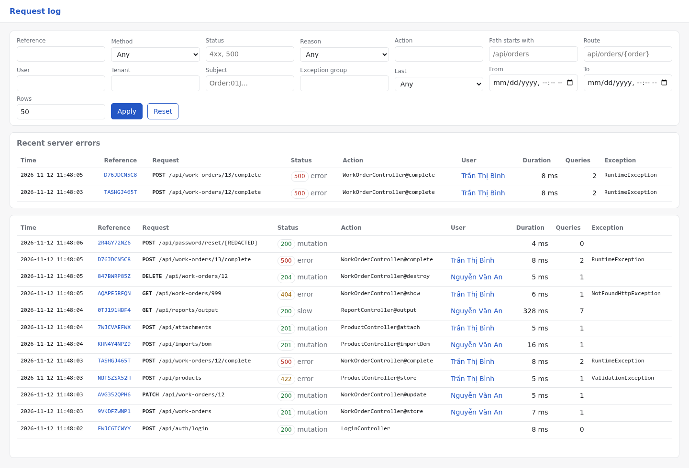
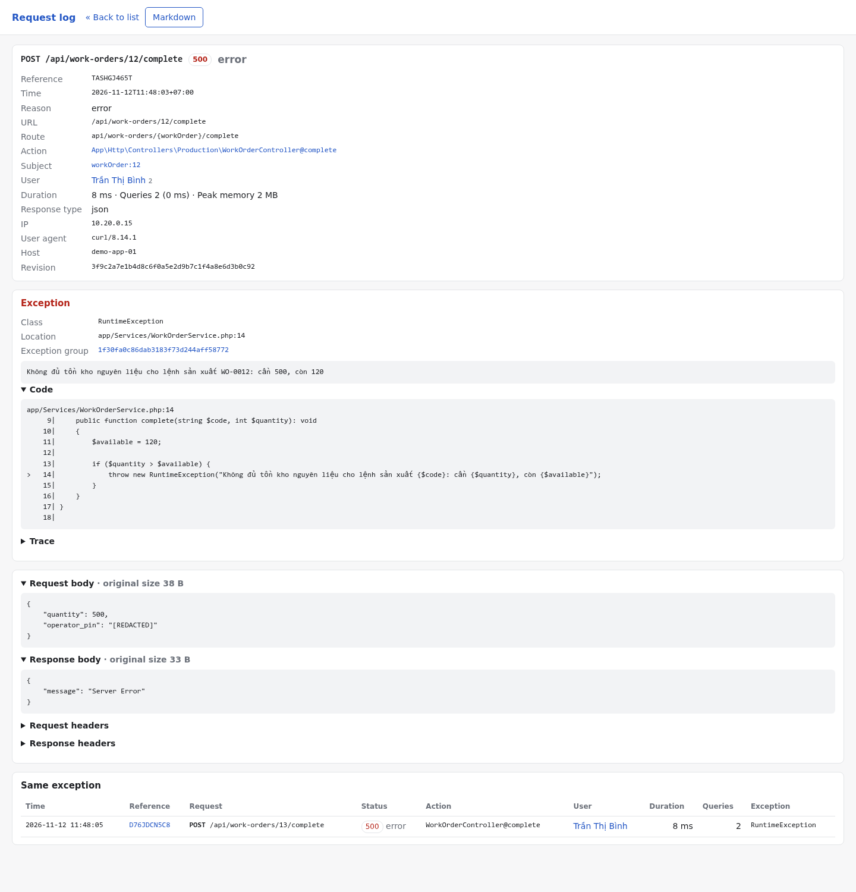
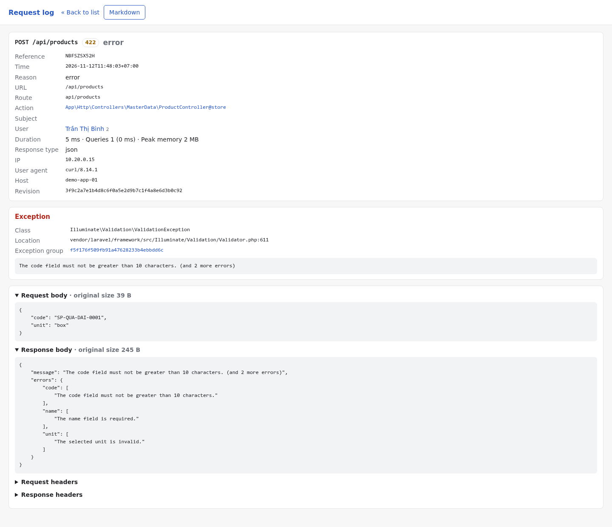
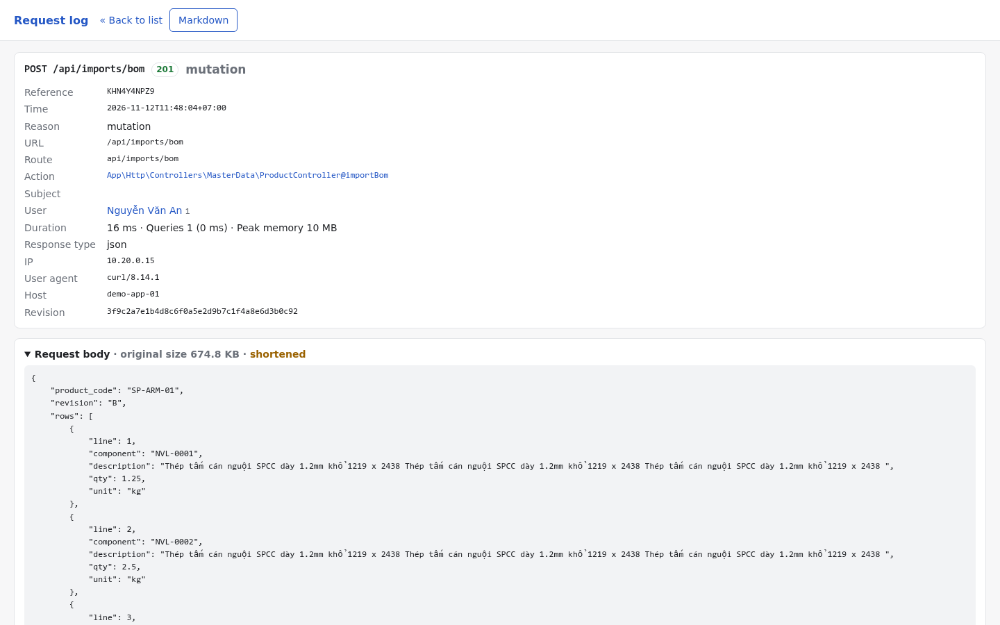
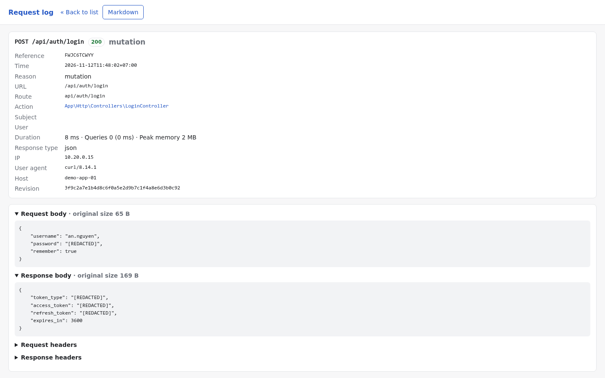
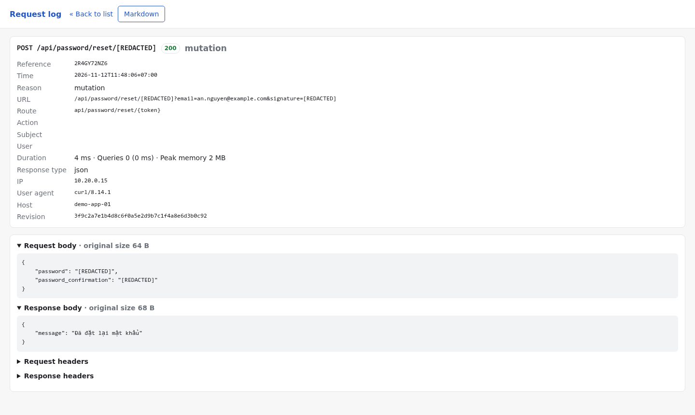
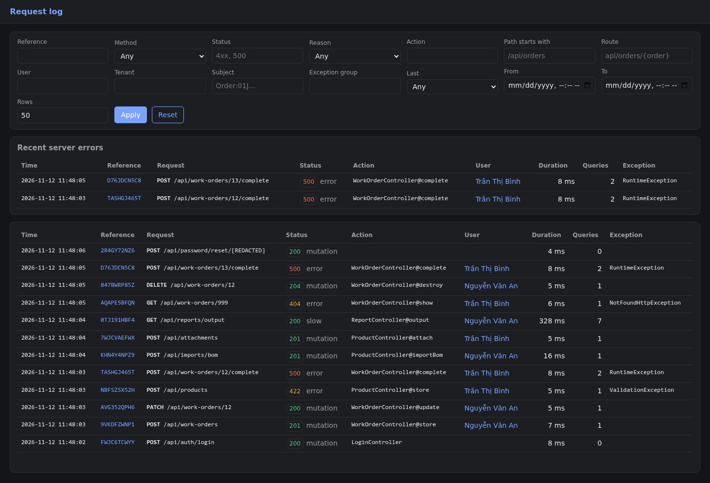

A structured, redacted, queryable HTTP request log for Laravel. It stores payloads, responses, exceptions, query statistics and who did what, in indexed columns. Rows are written after the response is sent.

This package replaces middlewares that had been copied into several applications and had drifted apart. It keeps what worked, fixes what didn't, and is meant to run in production.
Request bodies up to 512 KB and responses up to 256 KB are stored whole. Anything larger is shortened while staying valid JSON: "…[+742 items]", "…[+20113 chars]", and the original size is kept.
Passwords, tokens, secrets, PINs, card numbers, cookies and auth headers are redacted at any depth, in bodies, query strings, route parameters, responses and headers. JWTs and Bearer values are caught even under harmless keys.
Each request gets a 10-character code. It goes into the Laravel Context (so every log line and queued job carries it), the X-Request-Reference header and your error responses.
The class, the message (with SQL bindings removed), the project location, a source snippet with line numbers and a trimmed trace. A grouping hash lists every occurrence of the same failure.
The query count and total time for every request. The slowest queries are kept with the file:line in your code that ran them. Bindings are left out by default.
The decision is cheap and made inside the request. Capturing and storing happen after the response is sent. Failures are swallowed, and the log can use its own database connection.
A server-rendered viewer with no JavaScript and a strict CSP. You can filter by reference, status, user, tenant, action, subject, exception group or time, and export a record as Markdown. An optional cursor-paginated API is there for your own admin UI.
Records are pruned daily: 30 days, or 90 for server errors. request-log:audit scans stored data for anything that still looks like a secret before you trust a configuration.
When Telescope is installed, its entries are tagged ref:<reference>, and the viewer links straight to the whole batch of a request: SQL, logs, jobs and outgoing HTTP calls.
By default, every POST, PUT, PATCH and DELETE, and every request answered with 4xx or 5xx, including GET. Each row says why it was recorded.
| Reason | When | Default |
|---|---|---|
| error | Any method, status ≥ 400 | On |
| mutation | POST, PUT, PATCH, DELETE | On |
| slow | Slower than REQUEST_LOG_SLOW_MS | Off |
| sampled | A random share of the remaining traffic (REQUEST_LOG_SAMPLE_RATE) | Off |
| forced | Route has request-log:always, or your filterUsing() callback says so | Per route |
Per route you can use request-log:always to log GET 200 too, request-log:off to never log, and request-log:metadata to log without bodies. Health checks, Telescope, Horizon, Livewire and broadcasting/auth are ignored out of the box.
One global middleware, prepended automatically. Nothing to add to your routes.
A reference is assigned and put in the Laravel Context. Query counting starts.
Controllers, validation and exception rendering run as usual. Your problem responses can include RequestLog::referenceFor($status).
Is it a mutation, an error, slow or sampled? Recorded responses get the X-Request-Reference header.
The client has its answer. Under FPM, fastcgi_finish_request() has already run.
Bodies are redacted and shortened, the exception and slow queries are captured, and one row is inserted. Errors are swallowed.
Taken from the viewer with sample data from a manufacturing app. Click a screenshot for full size, or browse the demo.





{token} route parameter and the signature query parameter are redacted too.
The old loggers replaced anything over their 5–20 KB limit with the word truncated. Here, what you get stays useful.
Before: hand-rolled logger
"truncated"Now: request_body (original 675 KB, kept 471 KB)
{
"product_code": "SP-ARM-01",
"rows": [
{ "line": 1, "component": "NVL-0001", "qty": 1.25 },
…
{ "line": 1848, "component": "NVL-1848", "qty": 2310 },
"…[+752 items]"
]
}Turning the log on must not create a second copy of your users' secrets.
*password*, *token*, *secret*, *_pin, otp, cvv, *card_number*, signature and more.Bearer … and Basic … are removed from every stored string.local or through your viewRequestLogs gate. The API is off by default.no-store, DENY framing, and LIKE wildcards escaped.php artisan request-log:audit reports anything that still looks like a secret. Retention is 30 days, or 90 for 5xx.Compared with Laravel Telescope
| Request Log | Telescope | |
|---|---|---|
| Purpose | Always-on audit trail | Deep debugging |
| Storage | Indexed columns | One JSON blob per entry |
| Query by status, user, action, time | Yes | Tags only |
| Oversized response | Shortened, original size kept | "Purged By Telescope" |
| Redaction | Any depth, values, headers, URLs | Listed dot-paths |
| Production | Designed for it | Usually dev only |
| Together | Entries are tagged ref:<reference>; the viewer links to the Telescope batch. | |
Install it from Git until it is published on Packagist. The service provider is auto-discovered and the middleware registers itself.
composer.json
{
"repositories": [
{ "type": "vcs", "url": "https://github.com/ors-omes/laravel-request-log" }
]
}Terminal
composer require ors-omes/laravel-request-log:^0.1@beta php artisan migrate php artisan request-log:audit --since=24h
.env (recommended)
# keep log volume out of the app database and its backups
REQUEST_LOG_DB_CONNECTION=pgsql_log
REQUEST_LOG_SLOW_MS=1000AppServiceProvider::boot()
Gate::define('viewRequestLogs', fn (User $user) => $user->can('request-logs.view')); RequestLog::resolveTenantUsing(fn (Request $request) => $request->user()?->organization_id); // in your RFC 9457 exception renderer $problem['reference_code'] = RequestLog::referenceFor($status);
See the README for every option, the hooks, the JSON API and the configuration reference.
A static copy of the real viewer with sample data. Every record, Markdown export and pre-built filter is clickable.
Package ghi nhật ký request cho Laravel 12/13. Mặc định nó ghi mọi POST/PUT/PATCH/DELETE và mọi request trả 4xx/5xx, kể cả GET. Mỗi dòng gồm payload và response (đã che dữ liệu nhạy cảm; quá dài thì rút gọn có đánh dấu …[+N] chứ không bỏ cả), exception kèm đoạn mã nguồn, thống kê truy vấn, người dùng, tenant và đối tượng bị tác động.
Mã tham chiếu 10 ký tự được đưa vào Context, header X-Request-Reference và reference_code của response lỗi. Viewer chỉ mở cho môi trường local hoặc người qua gate viewRequestLogs.
Trong giai đoạn beta, hãy chạy php artisan request-log:audit --since=24h trên dữ liệu thật để kiểm tra còn bí mật nào bị lọt không. Xem bản demo tiếng Việt.